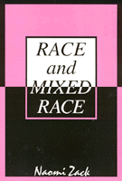

<body bgcolor="#FFFFFF" text="#000000" link="#0000FF" vlink="#CC0000" alink="#CC0000"><center><hr width="350" size="1" align="center" noshade>A philosopher of mixed race contemplates racial identity in America<hr width="350" size="1" align="center" noshade><p><a href="https://cdcshoppingcart.uchicago.edu/Cart/ChicagoBook.aspx?ISBN=9781566390644&&PRESS=temple" target="_top">Buy this book!</a> | <a href="https://cdcshoppingcart.uchicago.edu/Cart/Cart.aspx?PRESS=temple" target="_top">View Cart</a> | <a href="https://cdcshoppingcart.uchicago.edu/Cart/Cart.aspx?PRESS=temple" target="_top">Check Out</a></p><p></p></center><!--none//--><h1>Race and Mixed Race</h1>
<h3>Naomi Zack</h3>
<P>cloth 1-56639-064-8 $71.50, Oct 93, <FONT COLOR=#990033>Out of Stock Unavailable</FONT>
<br>paper 1-56639-265-9 $36.95, Sep 94, <FONT COLOR=#990033>Available</FONT>
<BR> 232 pp
6x9
</P><BLOCKQUOTE><I>"Analyzing conceptions and descriptions of race, Zack offers an intriguing exploration of the possibilities of mixed-race identity in society."</I>
<br>&#151<b><I>Publishers Weekly</I></b><I></I></BLOCKQUOTE>
<p>In the first philosophical challenge to accepted racial classifications in the United States, Naomi Zack uses philosophical methods to criticize their logic. Tracing social and historical problems related to racial identity, she discusses why race is a matter of such importance in America and examines the treatment of mixed race in law, society, and literature.
<p>Zack argues that black and white designations are themselves racist because the concept of race does not have an adequate scientific foundation. The "one drop" rule, originally a rationalization for slavery, persists today even though there have never been "pure" races and most American blacks have "white" genes.
<p>Exploring the existential problems of mixed race identity, she points out how the bi-racial system in this country generates a special racial alienation for many Americans. Ironically suggesting that we include "gray" in our racial vocabulary, Zack concludes that any racial identity is an expression of bad faith.
<BR>&nbsp;<h2>Reviews</h2>
<p><I>"Attacking such common racial notions as the idea that 'black plus white always results in black,' Zack deftly shows the flimsiness of our thinking about race."</I>
<br>&#151<b><I>The Philadelphia Inquirer</I></b>
<p><I>"</I>Race and Mixed Race<I> is a very thought-provoking essay on an extremely important topic. It is fascinating reading which contains many, many gems."</I>
<br>&#151<b>Laurence Thomas</b>, Syracuse University, author of <I>Vessels of Evil: American Slavery and the Holocaust</I>
<BR>&nbsp;<h2>Contents</h2><P>
<p>Preface and Acknowledgments
<p><b>Part I: The Existential Analysis</b>
<br>1. Introduction: Summary, Method, and Structure
<br>2. The Ordinary Concept of Race
<br>3. White Family Identity
<br>4. Black Family Identity
<br>5. Demography and the Identification of the Family
<br>6. Mixed-Race Family Identity
<p><b>Part II: The History of Mixed Race</b>
<br>7. Introduction to the History of Mixed Race
<br>8. The Law on Black and White
<br>9. Marooned!
<br>10. The Harlem Renaissance: Cultural Suicide
<br>11. Genocidal Images of Mixed Race
<br>12. Mulattoes in Fiction
<br>13. Alienation
<p><b>Part III: The Philosophy of Anti-Race</b>
<br>14. Nobility versus Good Faith
<br>15. Black, White, and Gray: Words, Words, Words
<p>Notes
<br>Select Bibliography
<br>Index
</P><BR>&nbsp;<H2>About the Author(s)</H2>
<table><tr><td valign="top"><img src="/tempress/authors/1004_au.gif" height="90" width="75"></td><td width="100%" valign="middle"><p><b>Naomi Zack</b> is Assistant Professor in the Department of Philosophy at the State University of New York at Albany. She herself is of mixed race: Jewish, African American, and Native American.</P></td></tr></table>
<BR><H2>Subject Categories</H2>
<p><A HREF="/tempress/general.html" TARGET="_top">General Interest</a>
<BR><A HREF="/tempress/philosophy.html" TARGET="_top">Philosophy and Ethics</a>
<BR><A HREF="/tempress/african.html" TARGET="_top">African American Studies</a>
</p>
<p align="center"><a href="https://cdcshoppingcart.uchicago.edu/Cart/ChicagoBook.aspx?ISBN=9781566390644&&PRESS=temple" target="_top">Buy this book!</a> | <a href="https://cdcshoppingcart.uchicago.edu/Cart/Cart.aspx?PRESS=temple" target="_top">View Cart</a> | <a href="https://cdcshoppingcart.uchicago.edu/Cart/Cart.aspx?PRESS=temple" target="_top">Check Out</a></p><p><font face="Arial" size="1"><a href="copyright.html" onMouseOver="window.status='Web Copyright Policy';return true;" onMouseOut="window.status=''" title="Web Copyright Policy">&copy;</a> 2015 <a href="http://www.temple.edu" target="new" onMouseOver="window.status='Link to Temple University home page';return true;" onMouseOut="window.status=''" title="Link to Temple University home page">Temple University</a>. All Rights Reserved. http://www.temple.edu/tempress/titles/1004_reg.html</font></p>